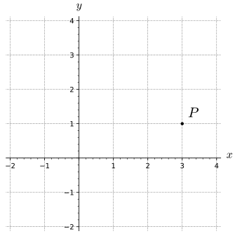
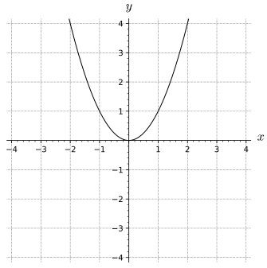
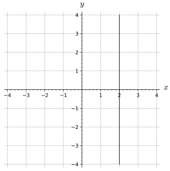

How can you describe a location in three dimensional space?
How do you measure distance between points in three or more dimensions?
Preview Activity9.2.1.
(a)

Figure9.2.1.A 2D plot with point \(P\) labeled
What are the coordinates of the point drawn in the plot above? Draw the segments from the point \(P\) to the vertical and horizontal axes to demonstrate the measurements of your coordinates.
(b)
On the plot below, graph and label the following points: \(P_1=(0,1)\text{,}\)\(P_2=(0,1)\text{,}\)\(P_3=(2,-3)\text{,}\)\(P_4=(3,-2)\text{,}\)\(P_5=(-3,2)\text{.}\)
Figure9.2.2.A blank 2D set of axes
(c)
What equation describes the points on the horizontal axis? You should think about what these points have in common (not what is different about the points.)
(d)
On the axes below, draw a graph of each of the following equations: \(x=1\text{,}\)\(y=-2\text{,}\) and \(-x=y\)
Figure9.2.3.A blank 2D set of axes
(e)
What is the formula for the distance from \((x_1,y_1)\) to \((x_2,y_2)\text{?}\) Use this formula to find how far \((-1,2)\) is from \((7,-4)\text{.}\)
(f)
Draw a plot of the points \((-1,2)\) and \((7,-4)\text{.}\) On your plot, draw the line segment that measures the distance between the points and the segments that measure the horizontal and vertical changes. Your plotted segments should make a right triangle. Explain how the right triangle you drew here relates to the calculation in the previous step.
(g)
Which of the following graphs can be expressed with \(y\) as a function of \(x\text{?}\) Show plots y=x^2, x=y^2, y=x+1, and x=2
Figure9.2.4.Plot A
Figure9.2.5.Plot B
Figure9.2.6.Plot C
Figure9.2.7.Plot D
Subsection9.2.1Three Dimensional Space and Coordinates
To plot points three-dimensional points, we need to set up a coordinate system with three mutually perpendicular axes the \(x\)-axis, the \(y\)-axis, and the \(z\)-axis (called the coordinate axes). There are essentially two different ways we could set up a 3D coordinate system, as shown in Figure9.2.8; thus, before we can proceed, we need to establish a convention.
Figure9.2.8.Left: A left hand system. Right: A right hand system
The distinction between these two figures is subtle, but important. In the coordinate system shown at left in Figure9.2.8, imagine that you are sitting on the positive \(z\)-axis next to the label \(z\text{.}\) Looking down at the \(x\)- and \(y\)-axes, you see that the \(y\)-axis is obtained by rotating the \(x\)-axis by 90\(^\circ\) in the clockwise direction. Again sitting on the positive \(z\)-axis in the coordinate system at right in Figure9.2.8, you see that the \(y\)-axis is obtained by rotating the \(x\)-axis by 90\(^\circ\) in the counterclockwise direction.
We call the coordinate system at right in Figure9.2.8 a right-hand system; if we point the index finger of our right hand along the positive \(x\)-axis and our middle finger along the positive \(y\)-axis, then our thumb points in the direction of the positive \(z\)-axis. Following mathematical conventions, we choose to use a right-hand system throughout this book.
Notation: We let \(\R^2\) denote the set of all ordered pairs of real numbers in the plane (two copies of the real number system) and let \(\R^3\) represent the set of all ordered triples of real numbers (which constitutes three-space).
In other disciplines or settings you may see the y-axis as being oriented vertically with the x-axis going left/right and the z-axis is going in and out of the page like in the figure below. This orientation may be useful for you because you can think of the traditional orientation of the \(xy\)-plane (when drawn on paper) with the positive \(z\)-axis coming out of the page.
Figure9.2.9.An alternate orientation of a right handed coordinate system for \(\mathbb{R}^3\)
Now that we have established how our axes will be defined, we can use these axes to define how to measure coordinates and make a few basic graphs. In two dimensions, the horizontal coordinate was measured as the (minimum) distance to the vertical axis and the vertical coordinate was measured as the (minimum) distance to the horizontal axis. These measurements are actually signed distance becuase the measurement is positive when the point is above the given axis and negative when the measurement is below the given axis. The plot below shows the measurement of the coordinates for a point in the first quadrant and the fourth quadrant. Notice that \(a\text{,}\)\(b\text{,}\) and \(c\) will be positive and \(d\) will be negative.
Figure9.2.10.A plot with the 2D coordinate measurements labeled
In a three dimensional space, we need to pay attention to the coordinate planes and not just the axes. The plot below shows how the \(xy\)-plane is the plane that contains the \(x\)- and \(y\)-axes. We can define the \(xz\)- and \(yz\)-planes in a similar manner.
Figure9.2.11.The coordinate planes in 3D
The location of a point is measured with three coordinates in a three dimensional space. The three dimensional rectangular coordinates are measured as the signed distances two each of the coordinate planes. The point (1,-2,3) is shown in the following plot.
Figure9.2.12.A plot of the point \((1,-2,3)\)
Notice how hard it is to see where that point in space is positioned without turning the axes. When drawing points (or other plots) in 3D, it is often useful to draw segements or other features that are parallel to coordinate axes in order to help the viewer see the proper orientation and locations. For instance, see how much easier it is to understand the location of the point \((1,-2,3)\) in the plot below because of the parallel structures that are shown on the plot.
Figure9.2.13.A plot of the point \((1,-2,3)\) with line segments parallel to the coordinate axes
Activity9.2.2.Drawing Points in 3D.
In this problem to move forward or backwards is to move in the direction of positive x (the x coordinate increases, the y and z remain the same) or negative x (the x coordinate decreases, the y and z remain the same), respectively; to the right or to the left is moving in the positive or negative y direction, respectively; up or down is moving in the positive or negative z direction, respectively:
(a)
Find the coordinates of the point \(A\) where one ends if one starts at point \((1,2,3)\) and moves 5 units forward, 4 units to the left, and 2 units up.
(b)
Draw the point \(A\) (that is your answer to task9.2.2.a) on a set of 3D axes and include the line segments that show that coordinates points as a set of directions from the origin (like in Activity9.2.13).
(c)
Find the coordinates of the point \(B\) where one ends if one starts at point \((3,-4,2)\) and moves 4 units backwards, 4 units to the right, and 4 units down.
(d)
Draw the point \(B\) (that is your answer to task9.2.2.c) on a set of 3D axes and include the line segments that show that coordinates points as a set of directions from the origin (like in Activity9.2.13).
Subsection9.2.2Fundamental Planes
At this point we will want to understand graphs of some simple equations in three dimensions. For example, in \(\R^2\text{,}\) the graphs of the equations \(x=a\) and \(y=b\text{,}\) where \(a\) and \(b\) are constants, are lines parallel to the coordinate axes. Remember that a graph of an equation is a plot of all points that satisfy this equation; This means that the graph of an equation is a visual representation of all locations whose coordiantes will make the left side of your equation equal to the right side of the equation. The equation should give you a way to test whether a point is on the graph or not. For instance, the graph of \(x=2\) in two dimensions will be a vertical line with \(x\) intercept of 2, because the points of the form \((2,y)\) satisfy the equation \(x=2\) (for any choice of \(y \in \mathbb{R}\text{.}\) In the next activity we consider the three-dimensional analogs.
Activity9.2.3.
(a)
Consider the set of points \((x,y,z)\) that satisfy the equation \(x=2\text{.}\) Describe this set as best you can.
Solution.
The set of points \((x,y,z)\) where \(x = 2\) is all the points such that \((2,y,z)\text{,}\) which creates a plane that is parallel to the yz-plane and goes through \(x = 2\text{.}\)
(b)
Consider the set of points \((x,y,z)\) that satisfy the equation \(y=-1\text{.}\) Describe this set as best you can.
Solution.
The set of points \((x,y,z)\) where \(y = -1\) is all the points such that \((x,-1,z)\text{,}\) which creates a plane that is parallel to the xz-plane and goes through \(y = -1\text{.}\)
(c)
Consider the set of points \((x,y,z)\) that satisfy the equation \(z=0\text{.}\) Describe this set as best you can.
Solution.
The set of points \((x,y,z)\) where \(z = 0\) is all the points such that \((x,y,0)\text{,}\) which creates a plane that is parallel to the xy-plane and goes through \(z = 0\text{.}\)
Activity9.2.3 shows that the equations where one of the rectangular coordinates is held constant leads to planes parallel to the coordinate planes. When we make the constant 0, we get the coordinate planes. The \(xy\)-plane satisfies \(z=0\text{,}\) the \(xz\)-plane satisfies \(y=0\text{,}\) and the \(yz\)-plane satisfies \(x=0\) (see Figure11.1.10). Planes of the form \(x=a\text{,}\)\(y=b\text{,}\)\(z=c\) are called fundamental planes are useful in understanding and building many different structures in 3D. In a plot like Figure9.2.3, you see a grid that helps measure coordinates of points. The corresponding plot below has a lot of visual clutter and is very hard to distinguish fine features.
Figure9.2.14.A grid of fundamental planes in 3D
In two dimensions, the four regions that were separated by the coordinate axes are called quadrants and are typically labeled as in the plot below.
Figure9.2.15.The four quadrants
The coordinate planes will divide our three dimensional space up into eight different regions, which we will call octants. The octants with positive \(z\)-coordinates are ordered just like the quadrants in 2D and octants 5 through 8 have the same relationships with negative \(z\)-coordinates.
Figure9.2.16.A plot of the eight octants
Subsection9.2.3Distance Formula in 3D
On a related note, we define a circle in \(\R^2\) as the set of all points equidistant from a fixed point. In \(\R^3\text{,}\) we call the set of all points equidistant from a fixed point a sphere. To find the equation of a sphere, we need to understand how to calculate the distance between two points in three-space, and we explore this idea in the next activity.
Activity9.2.4.
Let \(P=(x_0, y_0, z_0)\) and \(Q=(x_1, y_1, z_1)\) be two points in \(\R^3\text{.}\) These two points form opposite vertices of a rectangular box whose sides are planes parallel to the coordinate planes as illustrated in Figure9.2.17, and the distance between \(P\) and \(Q\) is the length of the blue diagonal shown in Figure9.2.17.
Figure9.2.17.A plot of \(P=(x_0, y_0, z_0)\) and \(Q=(x_1, y_1, z_1)\) with connecting segments
(a)
Consider the right triangle \(PRS\) in the base of the box whose hypotenuse is shown as the red line in Figure9.2.17. What are the coordinates of the vertices of this triangle?
Give the equation of the plane that contains the right triangle \(PRS\text{.}\)
Hint.
One of the coordinates is the same for all three points \(P, R, S\text{.}\)
Solution.
\(z=z_0\)
(c)
Since the right triangle \(PRS\) lies in a plane, we can use the Pythagorean Theorem to find a formula for the length of the hypotenuse of this triangle. Find the length of the segment \(PR\) in terms of \(x_0\text{,}\)\(y_0\text{,}\)\(x_1\text{,}\) and \(y_1\text{.}\)
The triangle \(PRQ\) has hypotenuse drawn with the blue segment connecting the points \(P\) and \(Q\) with a leg as the hypotenuse \(PR\) of the triangle lies entirely in a plane, so we can again use the Pythagorean Theorem to find the length of its hypotenuse. Show that the length of \(PQ\) is
The method used in Activity9.2.4 does not depend on anything but the coordinates between the two points, so we can use the last result to measure the distance between any two points in \(\mathbb{R}^3\text{.}\)
The distance between points.
The distance between points \(P=(x_0, y_0, z_0)\) and \(Q=(x_1, y_1, z_1)\) (denoted as \(|PQ|\)) in \(\R^3\) is given by the formula
As Activity9.2.4 showed, the distance in two or three (or more!) dimensions depends on the change in each coordinate from point to point. Note that the distance does not depend on whether we consider \(P\) to \(Q\) or \(Q\) to \(P\text{.}\)
Equation (9.2.1) can be used to derive the formula for a sphere centered at a point \((x_0,y_0,z_0)\) with radius \(R\text{.}\) Since the distance from any point \((x,y,z)\) on such a sphere to the point \((x_0,y_0,z_0)\) is \(r\text{,}\) the point \((x,y,z)\) will satisfy the equation
\begin{equation*}
\sqrt{(x-x_0)^2 + (y-y_0)^2 + (z-z_0)^2} = R
\end{equation*}
Squaring both sides, we come to the standard equation for a sphere.
The equation of a sphere.
The equation of a sphere with center \((x_0,y_0,z_0)\) and radius \(R\) is
This makes sense if we compare this equation to its two-dimensional analogue, the equation of a circle of radius \(R\) in the plane centered at \((x_0,y_0)\text{:}\)
(A) If the positive z-axis points upward, an equation for a horizontal plane through the point \(\left(3,2,2\right)\) is
.
(B) An equation for the plane perpendicular to the x-axis and passing through the point \(\left(3,2,2\right)\) is
.
(C) An equation for the plane parallel to the xz-plane and passing through the point \(\left(3,2,2\right)\) is
.
2.
You are given the following points: \(A = (10, 12, -16)\text{,}\)\(B = (16, 0, 5)\text{,}\)\(C = (-6, -8, 12)\text{.}\)
Which point is closest to the yz-plane?
A
B
C
What is the distance from the yz-plane to this point?
Which point is farthest from the xy-plane?
A
B
C
What is the distance from the xy-plane to this point?
Which point lies on the xz-plane?
A
B
C
Solution.
SOLUTION
The distance from a point to the \(yz\)-plane is the absolute value of the \(x\)-coordinate.
The point \(C(-6,-8,12)\) has the \(x\) coordinate with the smallest absolute value, so \(C\) is the point closest to the \(yz\)- plane.
The distance from the \(yz\)-plane to \(C\) is given by the absolute value of the \(x\)-coordinate, i.e. \(\left| -6 \right| = 6\text{.}\)
The distance from a point to the \(xy\)-plane is the absolute value of the \(z\)-coordinate.
The point \(A(10,12,-16)\) has the \(z\) coordinate with the largest absolute value, so \(A\) is the point farthest from the \(xy\)- plane.
The distance from the \(xy\)-plane to \(A\) is given by the absolute value of the \(z\)-coordinate, i.e. \(\left| -16 \right| = 16\text{.}\)
A point lies on the \(xz\)-plane if its \(y\)-coordinate is zero. Thus \(B(16,0,5)\) lies on the \(xz\)-plane.
3.
Find a formula for the shortest distance from a point \((a,b,c)\) to the \(z\)-axis.
distance =
4.
Find the distance from \((-9,7,-10)\) to each of the following:
1. The \(xy\)-plane.
Answer:
2. The \(yz\)-plane.
Answer:
3. The \(xz\)-plane.
Answer:
4. The \(x\)-axis.
Answer:
5. The \(y\)-axis.
Answer:
6. The \(z\)-axis.
Answer:
Solution.
SOLUTION
1. The distance from a point to the \(xy\)-plane is the absolute value of the \(z\)-coordinate of the point. Thus, the distance is \(\left| -10 \right| = 10\text{.}\)
2. The distance from a point to the \(yz\)-plane is the absolute value of the \(x\)-coordinate of the point. Thus, the distance is \(\left| -9 \right| = 9\text{.}\)
3. The distance from a point to the \(xz\)-plane is the absolute value of the \(y\)-coordinate of the point. Thus, the distance is \(\left| 7 \right| = 7\text{.}\)
4. The point on the \(x\)-axis closest to \((-9, 7, -10)\) is the point \((-9, 0,0 )\text{,}\) (Approach the \(x\)-axis perpendicularly.)
The distance from \((-9, 7, -10)\) to the \(x\)-axis is the distance between these two points:
Describe the set of points that satisfy \(x=2\) if you consider the space to be \(\mathbb{R}\) (the number line). Your description should include a sentence or two detailing the set and a plot of the graph of \(x=2\text{.}\)
(b)
Describe the set of points that satisfy \(x=2\) if you consider the space to be \(\mathbb{R}^2\) (the cartesian plane). Your description should include a sentence or two detailing the set and a plot of the graph of \(x=2\text{.}\)
(c)
Describe the set of points that satisfy \(x=2\) if you consider the space to be \(\mathbb{R}^3\) (3D space). Your description should include a sentence or two detailing the set and a plot of the graph of \(x=2\text{.}\)
6.
Find the equation of each of the following geometric objects.
(a)
The plane parallel to the \(xy\)-plane that passes through the point \((-4,5,-12)\text{.}\)
Solution.
\(z = -12\)
(b)
The plane parallel to the \(yz\)-plane that passes through the point \((7, -2, -3)\text{.}\)
Solution.
\(x = 7\)
(c)
The sphere centered at the point \((2,1,3)\) and has the point \((-1,0,-1)\) on its surface.
Solution.
\((x-2)^2 + (y-1)^2 + (z-3)^2 = 26\)
(d)
The sphere whose diameter has endpoints \((-3,1,-5)\) and \((7,9,-1)\text{.}\)
Solution.
\((x-2)^2 + (y-5)^2 + (z+3)^2 = 45\)
Subsection9.2.6Notes to the Instructor
This section only expects students to have familiarity with measuring distance in two dimensions.